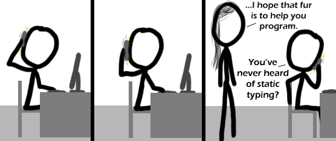

Comic JK 395
When I Feel Like It
⇤
<
?
>
⇥

⇤
<
?
>
⇥
Forum
.
RSS
.
Digg
.
Facebook
.
Reddit
.
Twitter
.
Stumbleupon
*Restore* Enter your thoughts on number 395 here. Please, no spamming, trolling, or phreaking. Functional programming is programming that actually works. > No, it's a category of Robotics programming. Mobility Programming is programming the drive system, Functional Programming is programming the actuators/arms/stuff >>No, functional programming is the obverse of imperative programming. > No, functional programming is for comp-sci neckbeards who like to feel smart while doing absolutely nothing of practical value. To refute this would require real-world examples of actual used applications. Good luck! Fourth, this could've been so great - if only the 'fur' wouldn't look like a cell phone : Third! And oh this pun is so.. so terrible and awesome... First! Person below me sucks. First + ∞!!!! Twentieth, even though we haven't reached that yet! And now I'm wondering how to type quickly with one hand. <.< Firstly First!, secondly I thought he was on a cell phone. No really, I'm first. Poor fur drawings FTW! At least he isn't a furry :D awesome! I am last, so i am first! ("Thee who are last shall be first") Is imperative programming like shouting at your computer? ^In a commanding German accent. >>literally >>>You mean figuratively >>>>Why would he mean figuratively? >>>>>Damn you. One day I shell have my revenge... >>>>>>"shell revenge" ? is that something like: "sudo SufferMyWrath" ? >>>>>>>Nope, literally. Declarative programming would be announcing "This time it SHALL compile!" ! tsriF